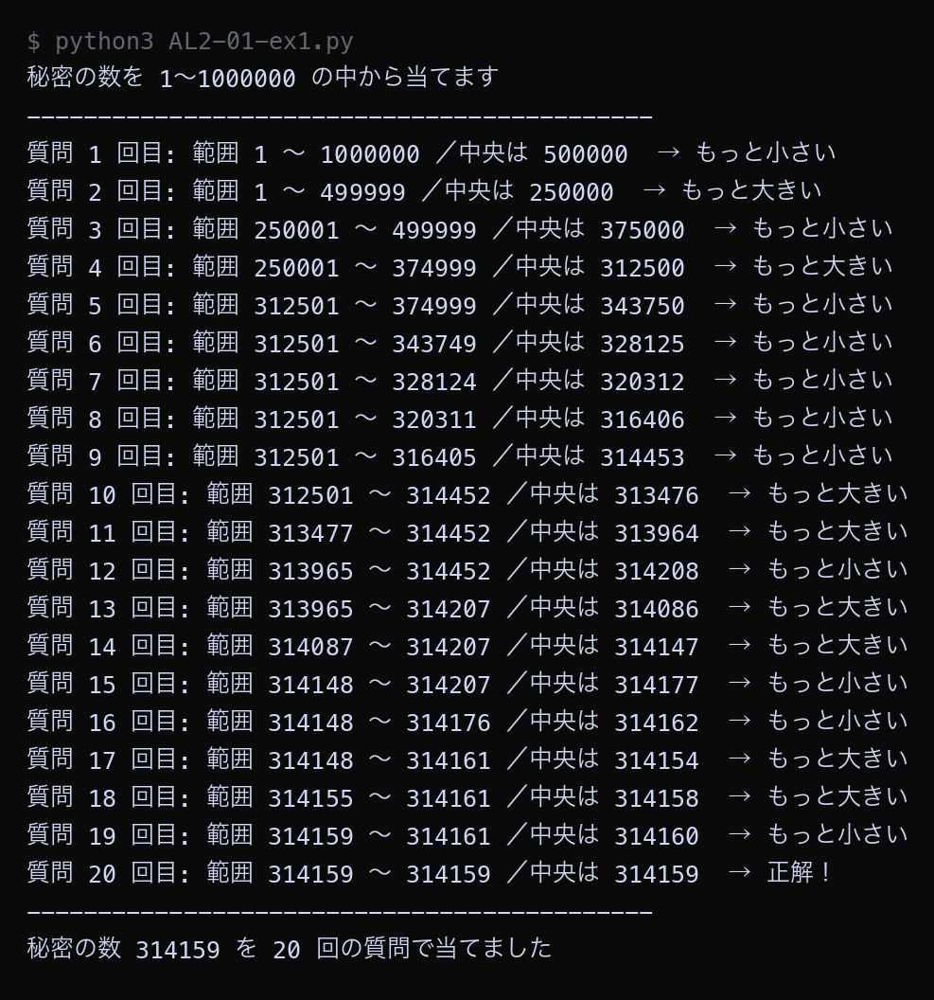
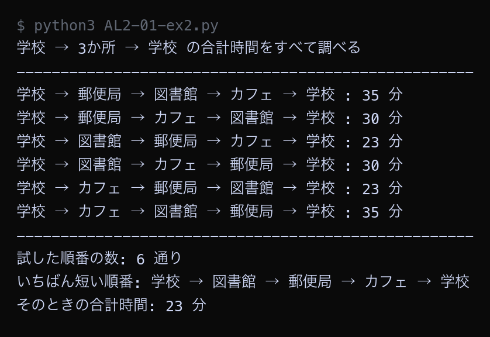
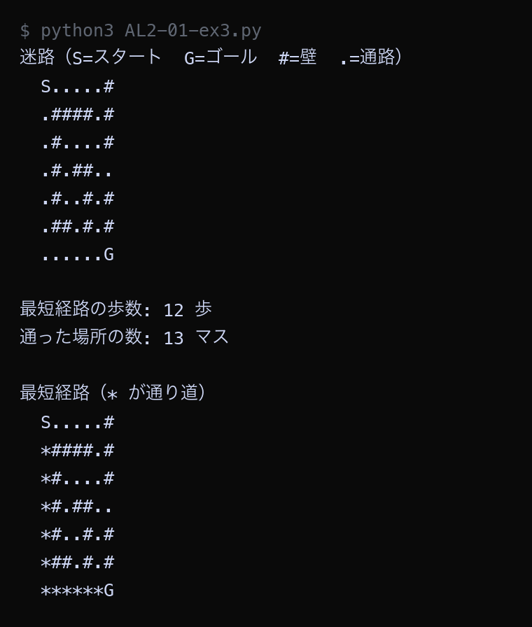
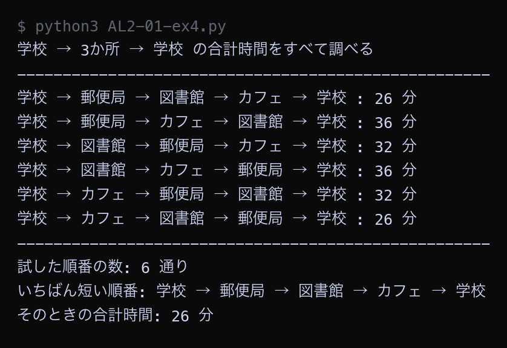

後期の目標（最適化アルゴリズム × ゲーム）を確認し、前期に学んだ探索アルゴリズムを動かして思い出す
前期のアルゴリズム論及び演習Iでは、「たくさんのデータの中から目的の1つを探す」方法を学びました。 逐次探索、二分探索、ハッシュ法、そして迷路の幅優先探索です。 後期のアルゴリズム論及び演習IIでは、一歩進んだ問題をあつかいます。 やり方が何通りもあるとき、いちばん良いやり方を見つけるという問題です。
考えられる選び方をすべて「候補」とみなし、その中からある基準でいちばん良いものを1つ選ぶことを最適化と呼びます。 基準は問題によって変わります。移動時間なら「短いほど良い」、売上なら「大きいほど良い」です。 後期の授業では、移動時間・移動コストを基準にした問題を中心にあつかいます。
| 道具 | いつ使うか | 学ぶ回 |
|---|---|---|
| グラフ | 地図・路線図・人のつながりを、コンピュータが扱える形に書き写すための表現方法 | 第3〜4回 |
| ダイクストラ法 | 出発点から各地点までの「最も安い行き方」を求める。カーナビの中身にあたる手法 | 第5〜7回 |
| 巡回セールスマン問題 | 全ての地点を1回ずつ回って戻る最短ルートを求める。宅配便の配送計画にあたる問題 | 第8〜10回 |
定期試験はありません。毎回の演習課題の提出で100%の評価となります。
課題は毎回同じ形です。Googleスライドを1本だけ作り、毎回3枚ずつ足していきます。 15回ぶんを足し終えると、45枚の「自分が作ったアルゴリズム解説資料」ができあがります。
| 枚 | 入れるもの |
|---|---|
| A | その回のしくみを説明する図（自分で作ったもの） |
| B | 自分のパソコンで動かした実行画面のスクリーンショットと、読み取れること |
| C | その回の問い2つへの答え（自分の実行結果の数値を根拠にする） |
説明する相手は前期を受けていない友達です。 専門用語をそのまま並べても伝わりません。自分の言葉で書いてください。
Step 1: スライドを作る
Step 2: 共有の設定をする
共有していないと、提出しても中身が見られず、未提出あつかいになります。必ず設定してください。
Step 3: 毎回の出し方を覚える
例題1から例題4までのコードを、実際に自分のパソコンで実行してください。 まず作業フォルダを用意します。
Step 1: 作業フォルダを作る
Step 2: VS Code でフォルダを開く
左側のエクスプローラーに No01 フォルダの中身が表示される（最初は空）。
Step 3: 例題ごとにファイルを作って実行する
AL2-01-ex1.py）今回作るファイル: AL2-01-ex1.py, AL2-01-ex2.py, AL2-01-ex3.py, AL2-01-ex4.py
| 用語（読み方） | 説明 |
|---|---|
| 最適化 さいてきか / optimization | 考えられる選び方の中から、ある基準でいちばん良いものを1つ選ぶこと。後期の授業全体のテーマ。 |
| 全探索 ぜんたんさく / brute force | 考えられる候補をすべて書き出して1つずつ調べる方法。必ず正しい答えが出るが、候補が増えると時間がかかる。 |
| 二分探索 にぶんたんさく / binary search | 並んでいるデータのまん中と比べ、外れた半分を捨てることをくり返す探し方。 |
| 幅優先探索 はばゆうせんたんさく / BFS | スタートから1歩で行ける場所、2歩で行ける場所、と近い順に調べる探し方。最短の歩数が求まる。 |
| 計算量 けいさんりょう / complexity | データが増えたときに手数がどれくらい増えるかを表す目安。O(n) や O(log n) のように書く。 |
前期に学んだ二分探索を、数当てゲームの形で思い出します。 1から100までの中に「秘密の数」が1つあり、コンピュータがまん中を聞く作戦で当てにいきます。
Python ── AL2-01-ex1.py # 数当てゲーム: コンピュータが「秘密の数」を当てる # 1 から 100 までの中に秘密の数が1つある。 # コンピュータは「まん中を聞く」作戦で当てにいく。 secret = 73 # 秘密の数（あとで自由に変えてよい） low = 1 # 探す範囲の下限 high = 100 # 探す範囲の上限 count = 0 # 何回目の質問かを数える print("秘密の数を 1〜100 の中から当てます") print("-" * 44) while low <= high: count = count + 1 middle = (low + high) // 2 # 範囲のまん中（// は小数を切り捨てる割り算） print("質問", count, "回目: 範囲", low, "〜", high, "／まん中は", middle, end=" ") if middle == secret: print("→ 正解！") break elif middle < secret: print("→ もっと大きい") low = middle + 1 # 下限を上げて、右半分だけを残す else: print("→ もっと小さい") high = middle - 1 # 上限を下げて、左半分だけを残す print("-" * 44) print("秘密の数", secret, "を", count, "回の質問で当てました")
▶ 実行結果

質問のたびに、探す範囲が 100個 → 50個 → 24個 → 12個 → 6個 → 3個 と、およそ半分ずつ減っています。1から100までの100個の中から、たった6回の質問で73を当てられました。「まん中を聞いて、外れた半分を捨てる」という作戦が二分探索です。
二分探索がどれくらい得なのかを、逐次探索と比べて数で確かめます。 逐次探索は先頭から1つずつ調べる方法、二分探索はまん中と比べて半分を捨てる方法です。
Python ── AL2-01-ex2.py # 同じ「探す」でも、やり方によって手数がどれだけ違うかを数える def linear_search_count(data, target): """先頭から1つずつ調べる（逐次探索）。調べた回数を返す""" count = 0 for value in data: count = count + 1 if value == target: return count return count def binary_search_count(data, target): """まん中と比べて半分ずつ捨てる（二分探索）。調べた回数を返す""" low = 0 high = len(data) - 1 count = 0 while low <= high: count = count + 1 middle = (low + high) // 2 if data[middle] == target: return count elif data[middle] < target: low = middle + 1 else: high = middle - 1 return count print("データの個数 逐次探索の回数 二分探索の回数") print("-" * 50) for size in [10, 100, 1000, 10000, 100000]: data = list(range(1, size + 1)) # 1, 2, 3, ... という並んだデータを作る target = size # いちばん最後の数をさがす times_linear = linear_search_count(data, target) times_binary = binary_search_count(data, target) print(f"{size:>10} {times_linear:>14} {times_binary:>14}") print("-" * 50) print("データが10倍になっても、二分探索の回数はほとんど増えない")
▶ 実行結果

データの個数が10倍になるたびに、逐次探索の回数も10倍に増えています（10 → 100 → 1000 → 10000 → 100000）。一方の二分探索は 4 → 7 → 10 → 14 → 17 と、3〜4回ずつしか増えません。データが10万個あっても17回で見つかります。同じ答えにたどり着くのに、手数がまったく違うという点が重要です。
前期の最後にあつかった幅優先探索を、迷路で思い出します。 幅優先探索は、スタートから1歩で行ける場所をすべて調べ、次に2歩で行ける場所をすべて調べるという順番で進みます。 波紋が広がるように調べていくため、最初にゴールへ届いたときの歩数が必ず最短になります。
Python ── AL2-01-ex3.py # 前期の復習: 幅優先探索（はばゆうせんたんさく）で迷路の最短経路を求める from collections import deque # S = スタート、G = ゴール、# = 壁、. = 通路 maze = [ "S.....#", ".####.#", ".#....#", ".#.##..", ".#..#.#", ".##.#.#", "......G", ] rows = len(maze) cols = len(maze[0]) # スタートとゴールの位置（行, 列）を探す for r in range(rows): for c in range(cols): if maze[r][c] == "S": start = (r, c) if maze[r][c] == "G": goal = (r, c) print("迷路（S=スタート G=ゴール #=壁 .=通路）") for line in maze: print(" " + line) print() # --- 幅優先探索 --- # queue = これから調べる場所を書いたメモ。先に書いたものから先に読む。 queue = deque() queue.append(start) # came_from = 「その場所へ、どこから来たか」を記録する辞書 came_from = {start: None} while len(queue) > 0: current = queue.popleft() # メモのいちばん古い行を読んで消す if current == goal: break r, c = current # 上・下・左・右の4方向を順に調べる for dr, dc in [(-1, 0), (1, 0), (0, -1), (0, 1)]: nr = r + dr nc = c + dc if nr < 0 or nr >= rows or nc < 0 or nc >= cols: continue # 迷路の外なので調べない if maze[nr][nc] == "#": continue # 壁なので通れない if (nr, nc) in came_from: continue # すでに来たことがある場所 came_from[(nr, nc)] = current queue.append((nr, nc)) # --- ゴールからスタートへ逆にたどって経路を復元する --- path = [] node = goal while node is not None: path.append(node) node = came_from[node] path.reverse() print("最短経路の歩数:", len(path) - 1, "歩") print("通った場所の数:", len(path), "マス") print() # 経路を * で塗って表示する picture = [list(line) for line in maze] for (r, c) in path: if picture[r][c] == ".": picture[r][c] = "*" print("最短経路（* が通り道）") for line in picture: print(" " + "".join(line))
▶ 実行結果

スタートからゴールまで12歩で着く道が見つかりました。2つ目の迷路図で * が付いているマスが通り道です。左端の列をまっすぐ下り、いちばん下の行を右へ進む道になっています。幅優先探索は「歩数が少ない順」に調べるので、最初に届いた道がそのまま最短経路になります。
後期のテーマである最適化を、いちばん小さな形で体験します。 学校を出発して3か所を回り、学校へ戻ります。回る順番は全部で6通りあり、順番によって合計時間が変わります。 6通りをすべて試して、いちばん短い順番を選びます。
Python ── AL2-01-ex4.py # 後期のテーマ「最適化」の入口 # 学校を出発して3か所を回り、学校へ戻る。いちばん短い順番はどれか。 # 2地点のあいだの移動時間（分） travel_time = { ("学校", "郵便局"): 8, ("学校", "図書館"): 12, ("学校", "カフェ"): 5, ("郵便局", "図書館"): 6, ("郵便局", "カフェ"): 9, ("図書館", "カフェ"): 7, } def minutes_between(a, b): """2地点 a と b のあいだの移動時間を返す（表は片方向しか書いていないので両方ためす）""" if (a, b) in travel_time: return travel_time[(a, b)] return travel_time[(b, a)] def total_minutes(route): """学校 → route の順に回る → 学校 に戻るまでの合計時間を返す""" total = 0 place = "学校" for next_place in route: total = total + minutes_between(place, next_place) place = next_place total = total + minutes_between(place, "学校") # 最後は学校へ戻る return total # 3か所を回る順番は、全部で 6 通りある。全部書き出して1つずつ試す。 all_routes = [ ["郵便局", "図書館", "カフェ"], ["郵便局", "カフェ", "図書館"], ["図書館", "郵便局", "カフェ"], ["図書館", "カフェ", "郵便局"], ["カフェ", "郵便局", "図書館"], ["カフェ", "図書館", "郵便局"], ] print("学校 → 3か所 → 学校 の合計時間をすべて調べる") print("-" * 52) best_route = None best_time = None for route in all_routes: minutes = total_minutes(route) print("学校 →", " → ".join(route), "→ 学校 :", minutes, "分") if best_time is None or minutes < best_time: best_time = minutes best_route = route print("-" * 52) print("試した順番の数:", len(all_routes), "通り") print("いちばん短い順番: 学校 →", " → ".join(best_route), "→ 学校") print("そのときの合計時間:", best_time, "分")
▶ 実行結果

6通りすべての合計時間が表示され、最短は26分でした。「学校 → 郵便局 → 図書館 → カフェ → 学校」と「学校 → カフェ → 図書館 → 郵便局 → 学校」の2つが同じ26分になっています。2つは進む向きが逆なだけで、通る道は同じだからです。すべての候補を書き出して比べる方法を全探索と呼びます。
自分のGoogleスライドに、第1回ぶんの3枚を追加してください。 見出しは「第1回: 「探す」と「いちばん良いものを選ぶ」のちがい」にします。 説明する相手は前期のアルゴリズム論及び演習Iを受けていない友達です。 専門用語をそのまま書いても伝わりません。
次の3つが伝わる図を、自分で作って1枚に入れてください。
図に必ず入れる3つ
図のほかに、1文だけ説明を書いてください。 「「探す」と「いちばん良いものを選ぶ」のちがいとは、○○を○○する方法です」の形で、20〜40字におさめます。
やること
AL2-01-ex4.py を自分のパソコンで実行するAL2/No01 のフォルダ名とファイル名が写っている状態）読み取ること（この2つに答える）
次の2つの問いに答えてください。答えの中で、 スライドBに貼った自分の実行結果の数値を必ず引用してください。
AL2-01-ex4.py の「学校—カフェ」を 5 から 20 に書き換えて実行してください。いちばん短い順番と合計時間が、書き換える前とどう変わったかを数値で書き、なぜ変わったのかを説明してください。手順
| 観点 | 点 | 見るところ |
|---|---|---|
| 図を自分で作ったか | 3 | 授業ページの図の貼りつけは0点。指定の3要素が図に入っているか |
| 自分で動かした証拠があるか | 2 | VS Codeのウィンドウごとのスクリーンショット。フォルダ名が読めるか |
| 数値を根拠にしているか | 3 | 自分の実行結果の数値を引用しているか。数値と説明が合っているか |
| 言葉が自分のものか | 2 | 専門用語をそのまま並べていないか。前期未履修の友達に伝わるか |
| 不十分な例 | どう直すか |
|---|---|
| 授業ページの図をスクリーンショットして貼る | 同じ内容でよいので、図形を自分で並べ直す。手描きの写真でもよい |
| ターミナルの文字だけを切り取って貼る | VS Codeのウィンドウ全体を撮る。フォルダ名とファイル名が写るようにする |
| 「速いことが分かりました」で終わる | 「自分の結果では6秒と0.01秒で、600倍ほど違った」と数値を書く |
| 教材の文をそのまま写す | 専門用語を1つ選び、それを使わずに言いかえてみる |
| 3枚を最後の週にまとめて作る | 変更履歴で分かります。毎回の授業中に作ってください |